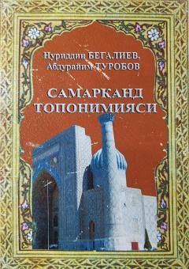

STSamarqand hududidagi geografik nomlarning kelib chiqishi va ma'nolarini o'rganuvchi ilmiy qo'llanma.
Ushbu o'quv-uslubiy qo'llanma Samarqand hududidagi geografik nomlar, ularning kelib chiqishi, etimologiyasi va lingvistik xususiyatlarini ilmiy nuqtai nazardan tahlil qiladi. Kitob toponimika fanining nazariy asoslari hamda Samarqand toponimiyasining tarixiy va etnik ildizlarini yoritib beradi.